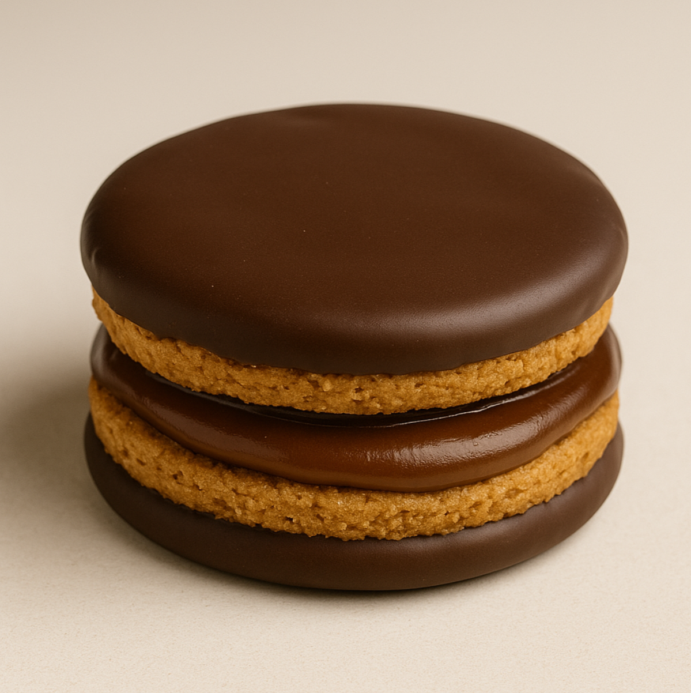
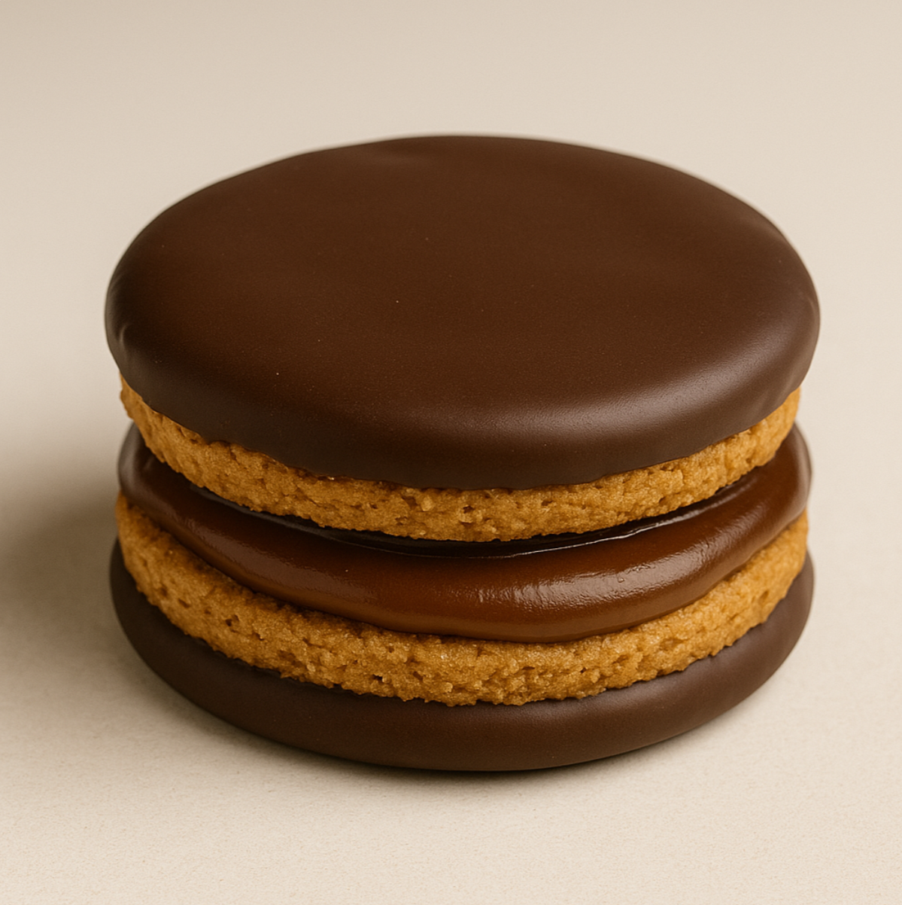

Alfajor Fantoche
Segundo lanzamiento. Textura suave, abundante relleno y cobertura ligera.
Ingredientes
- Harina de trigo
- Azúcar
- Dulce de leche
- Cacao en polvo
- Leche
- Esencia de vainilla
Segundo lanzamiento. Textura suave, abundante relleno y cobertura ligera.
